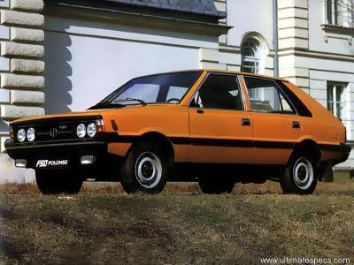
Opis: Prawdziwa legenda i gwiazda serialu "07 zgłoś się". To za kółkiem tego wozu porucznik Borewicz ścigał cinkciarzy i prywaciarzy. Włoska linia nadwozia projektu samego Giugiaro, pod którą ukryto bebechy z Dużego Fiata. Kanciasty przód robił respekt na dzielnicy, a kręcenie kierownicą na parkingu skutecznie zastępowało wizytę na siłowni.
| Parametr | Wartość |
|---|---|
| Lata produkcji | 1978 – 1991 |
| Miejsce produkcji | FSO, Żerań (Warszawa) |
| Wersje silnikowe | 1.5 (CB / C / LE / SLE) - gaźnikowe |
| Cena kiedyś | Majątek i talon (lata 80. ok. 150-200 tys. zł lub 3300 USD) |
| Cena teraz | ok. 15 000 – 35 000 zł |
| Dostępne kolory | Kość słoniowa, beż, jasna zieleń, pomarańcz, milicyjny niebieski |
| Przyspieszenie 0-100 km/h | Około 17-19 sekund |
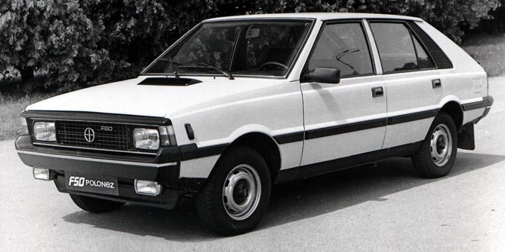
Opis: Naturalna ewolucja polskiej motoryzacji. Silnik o pojemności 1.6 dawał wreszcie poczucie, że auto potrafi przyspieszać, a nie tylko nabierać prędkości. Aerodynamika kioskowej budki pozostała niezmienna, ale za to w środku było na tyle miejsca, że po złożeniu siedzeń można było przewieźć pół meblościanki albo lodówkę Mińsk. Prawdziwy wół roboczy lat 90.
| Parametr | Wartość |
|---|---|
| Lata produkcji | 1987 – 1997 |
| Miejsce produkcji | FSO, Żerań (Warszawa) |
| Wersje silnikowe | 1.6 SLE / GLI (gaźnik lub jednopunktowy wtrysk) |
| Cena kiedyś | 3500 - 4500 USD (w latach transformacji) |
| Cena teraz | ok. 8 000 – 20 000 zł |
| Dostępne kolory | Biały, czerwony, grafitowy metalik, zielony |
| Przyspieszenie 0-100 km/h | Około 16 sekund |
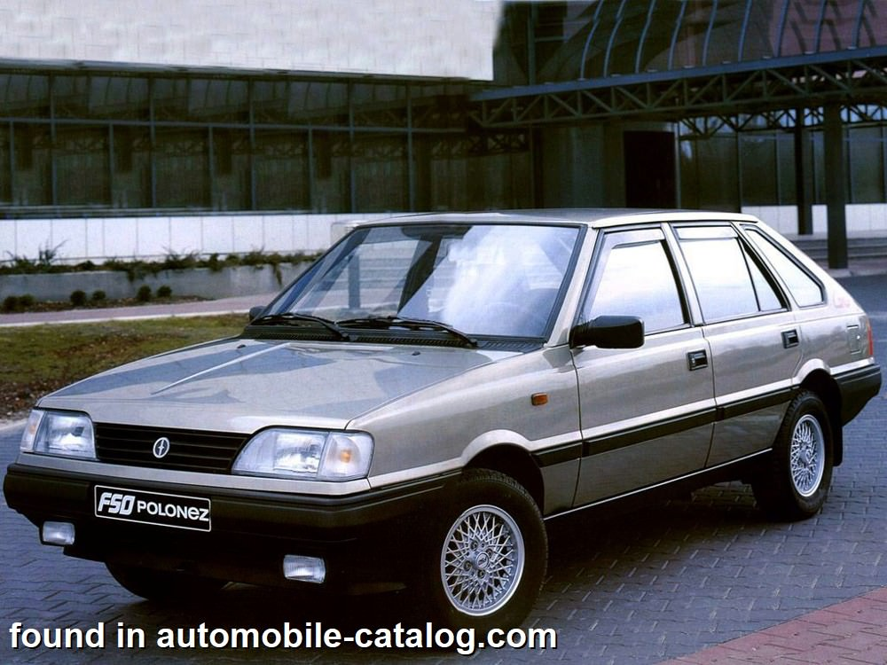
Opis: Legendarny polski samochod, ktory byl hitem na osiedlach. Wersja Caro przyniosla nowoczesne, plastikowe zderzaki. Kultowy silnik OHV wydaje charakterystyczne dzwieki, a zimą jazda bez dociazenia bagaznika to powazne wyzwanie. Wlacz to, bo chce miodu!
| Parametr | Wartość |
|---|---|
| Lata produkcji | 1991 – 1997 |
| Miejsce produkcji | FSO, Żerań (Warszawa) |
| Wersje silnikowe | 1.5 OHV, 1.6 OHV, brytyjski 1.4 MPI (Rover) oraz 1.9 Diesel (PSA) |
| Cena kiedyś | ok. 120-150 mln zł przed denominacją |
| Cena teraz | ok. 6 000 – 18 000 zł |
| Dostępne kolory | Czerwony wiśniowy, biały, granatowy, turkusowy metalik |
| Przyspieszenie 0-100 km/h | Od 14 sekund do 18 sekund |
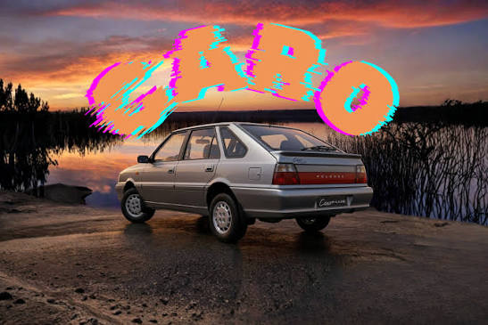
Opis: Ostatnie tchnienie fabryki na Żeraniu, już pod czujnym okiem koreańskiego Daewoo. Caro Plus to powiew zachodniego luksusu – dostał nową, zaokrągloną deskę rozdzielczą, klamki, które przestały urywać paznokcie, i wielopunktowy wtrysk paliwa.
| Parametr | Wartość |
|---|---|
| Lata produkcji | 1997 – 2002 |
| Miejsce produkcji | Daewoo-FSO, Żerań (Warszawa) |
| Wersje silnikowe | 1.6 GLI, 1.6 GSI (16V) oraz 1.4 MPI Rover |
| Cena kiedyś | ok. 25 000 - 35 000 PLN (w salonach) |
| Cena teraz | ok. 7 000 – 22 000 zł |
| Przyspieszenie 0-100 km/h | Około 13.5 - 15 sekund |
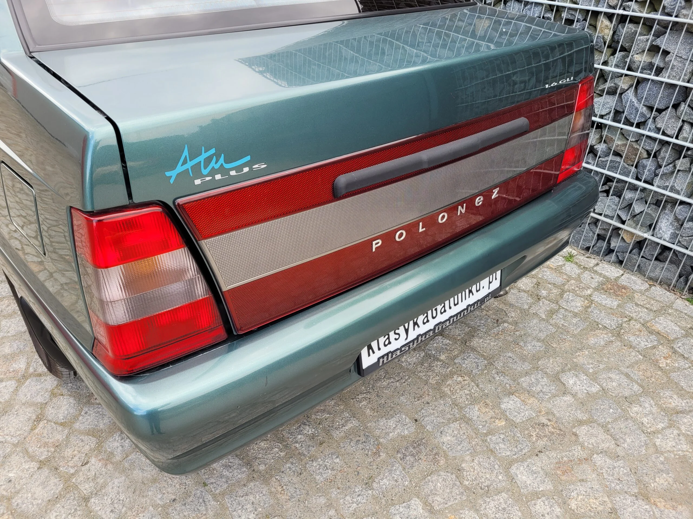
Opis: Odpowiedź FSO na rynkowe zapotrzebowanie na sedana, czyli kultowy Polonez z "plecakiem". Wersja Atu zadebiutowała w połowie lat 90., dając polskim rodzinom i biznesmenom złudzenie posiadania bardziej eleganckiej limuzyny.
| Parametr | Wartość |
|---|---|
| Lata produkcji | 1996 – 1997 |
| Miejsce produkcji | FSO, Żerań (Warszawa) |
| Wersje silnikowe | 1.6 GLI, 1.4 MPI Rover |
| Cena kiedyś | ok. 30 000 PLN |
| Cena teraz | ok. 5 000 – 15 000 zł |
| Przyspieszenie 0-100 km/h | Około 14 sekund |
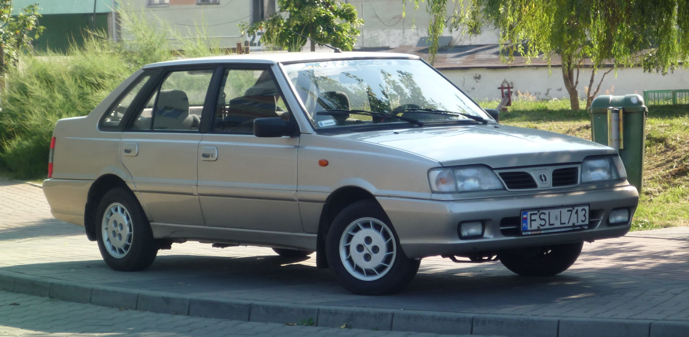
Opis: Zmodernizowana odmiana sedana z epoki Daewoo-FSO. Atu Plus zyskał to samo co Caro Plus – nowocześniejszy przód, lepsze wyciszenie kabiny oraz bardziej cywilizowaną deskę rozdzielczą.
| Parametr | Wartość |
|---|---|
| Lata produkcji | 1997 – 2002 |
| Miejsce produkcji | Daewoo-FSO, Żerań (Warszawa) |
| Wersje silnikowe | 1.6 GSI, 1.4 MPI Rover |
| Cena kiedyś | ok. 32 000 - 38 000 PLN |
| Cena teraz | ok. 6 000 – 18 000 zł |
| Przyspieszenie 0-100 km/h | Około 13.5 - 15 sekund |
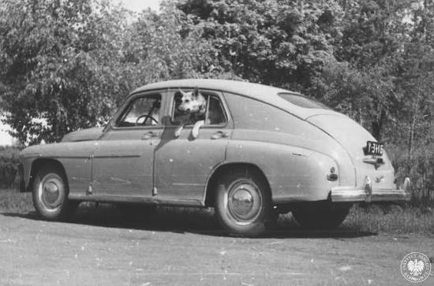
Opis: Pierwszy seryjnie produkowany samochod w powojennej Polsce. Blacha byla tak gruba, ze auto wazylo niemal poltorej tony. Sluzyla glownie jako taksowka, milicyjny woz oraz limuzyna dla urzednikow.
| Parametr | Wartość |
|---|---|
| Lata produkcji | 1951 – 1973 |
| Miejsce produkcji | FSO, Żerań (Warszawa) |
| Wersje silnikowe | M-20 (dolnozaworowy), S-21 (górnozaworowy 2.1 l) |
| Cena kiedyś | Towar reglamentowany / talony (w latach 60. ok. 120 000 zł) |
| Cena teraz | ok. 40 000 – 90 000 zł |
| Przyspieszenie 0-100 km/h | Około 30-40 sekund (czołgowe tempo) |
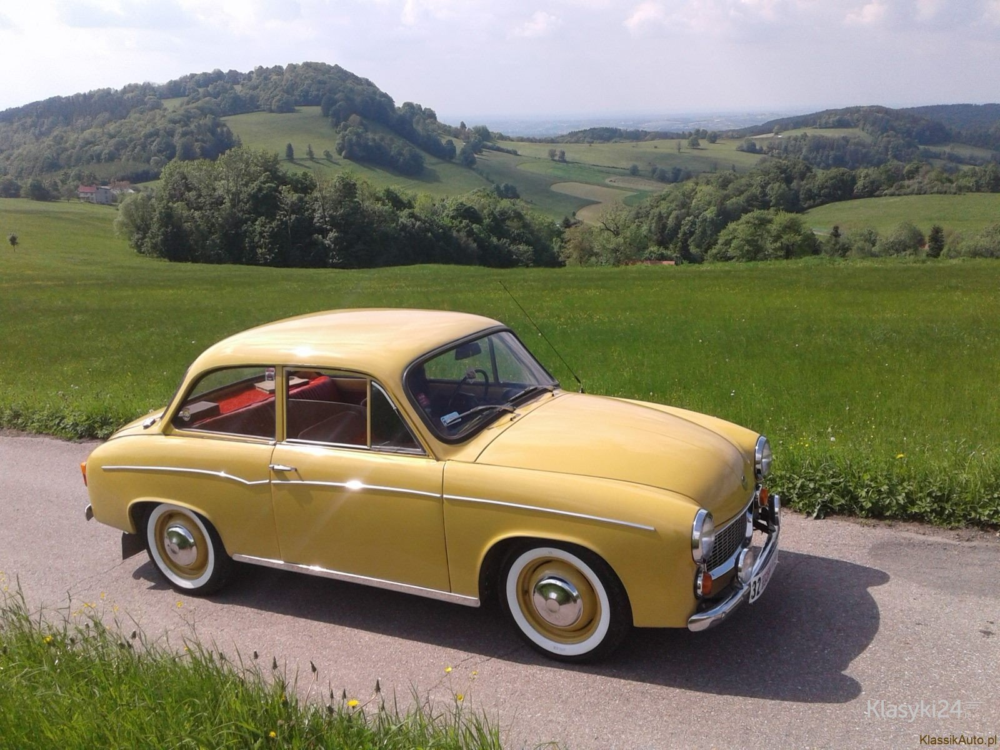
Opis: Królowa polskich dróg i dwusuwowy generator chmur niebieskiego dymu z oleju Mixol. Biegi przy kierownicy to czysta poezja. Rdza zjadała ją już w prospekcie reklamowym.
| Parametr | Wartość |
|---|---|
| Lata produkcji | 1972 – 1983 (w FSO, później w WSM Bielsko-Biała) |
| Miejsce produkcji | FSO Warszawa / WSM Bielsko-Biała |
| Wersje silnikowe | S-31 (3-cylindrowy dwusuw, poj. 843 cm³) |
| Cena kiedyś | 72 000 zł (według oficjalnych cenników z lat 70.) |
| Cena teraz | ok. 15 000 – 40 000 zł |
| Przyspieszenie 0-100 km/h | Około 40 sekund (o ile wiatr wieja w plecy) |
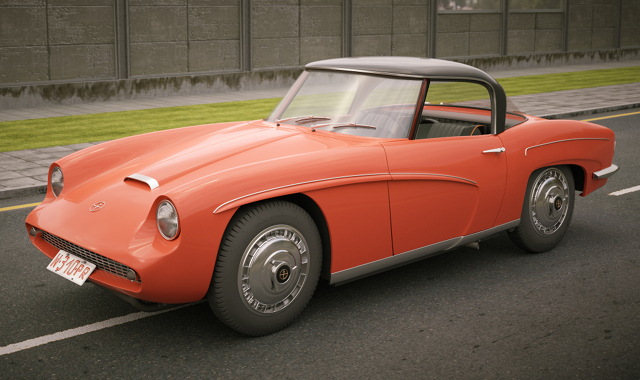
Opis: Najpiękniejszy polski samochód, którego komunistyczna władza kazała zniszczyć. Zbudowany potajemnie przez inżynierów z FSO jako wizja nowoczesnego auta sportowego z laminatowym nadwoziem.
| Parametr | Wartość |
|---|---|
| Lata produkcji | 1960 (jedyny egzemplarz prototypowy) |
| Miejsce produkcji | Ośrodek Badawczo-Rozwojowy FSO, Warszawa |
| Wersje silnikowe | Dwucylindrowy bokser, czterosuwowy, poj. 700 cm³ |
| Cena kiedyś | Prototyp (nie do kupienia za żadne pieniądze) |
| Cena teraz | Repliki budowane przez pasjonatów to koszt rzędu 150 000+ zł |
| Prędkość maksymalna | Ok. 110-120 km/h |
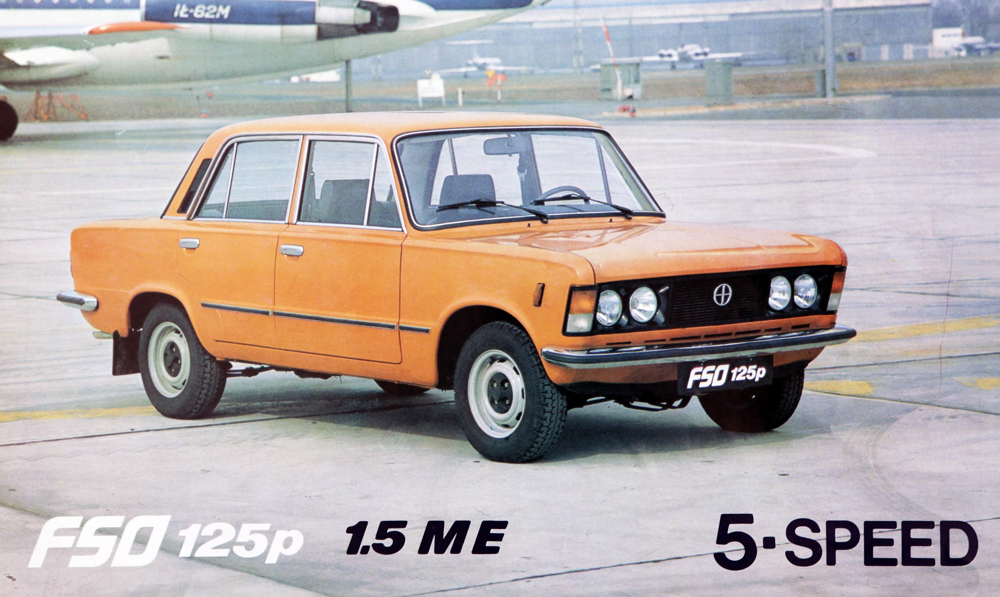
Opis: Popularny "Kredens" lub "Kant", czyli marzenie każdego ojca w PRL-u. Kanciasty, majestatyczny i znacznie bardziej prestiżowy od Malucha. To nim jeździli legendarni "Zmiennicy".
| Parametr | Wartość |
|---|---|
| Lata produkcji | 1967 – 1991 |
| Miejsce produkcji | FSO, Żerań (Warszawa) |
| Wersje silnikowe | 1.3 (125B) oraz 1.5 (1300/1500), sporadycznie diesle |
| Cena kiedyś | Eksport wewnętrzny (bony PKO) lub wieloletni talon (ok. 75-100 tys. zł w latach 70.) |
| Cena teraz | ok. 12 000 – 35 000 zł |
| Przyspieszenie 0-100 km/h | Około 17-20 sekund |
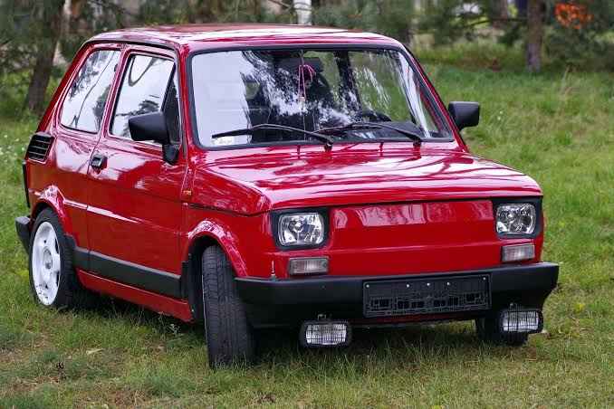
Opis: Samochód, który zmotoryzował Polskę. Mimo że do bagażnika z przodu mieściła się tylko kosmetyczka, czteroosobowa rodzina potrafiła dojechać nim do Bułgarii.
| Parametr | Wartość |
|---|---|
| Lata produkcji | 1973 – 2000 |
| Miejsce produkcji | Fabryka Samochodów Małolitrażowych (FSM), Tychy / Bielsko-Biała |
| Wersje silnikowe | 600 cm³, 650 cm³ oraz chłodzony cieczą 704 cm³ (Bis) |
| Cena kiedyś | 69 000 zł (na początku produkcji w latach 70.) |
| Cena teraz | ok. 8 000 – 30 000 zł |
| Przyspieszenie 0-100 km/h | Około 33-35 sekund (prawdziwa szkoła cierpliwości) |
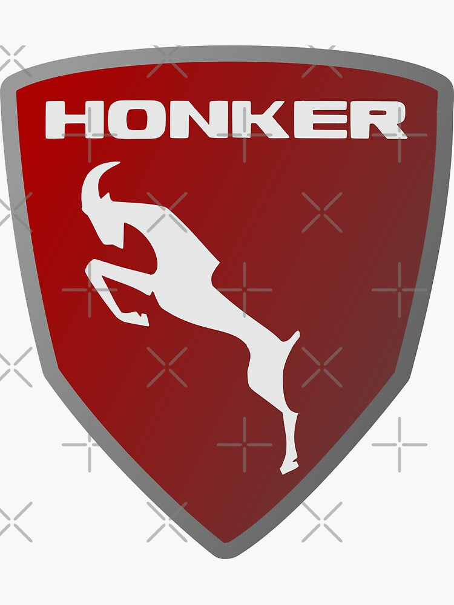
FSC Żuk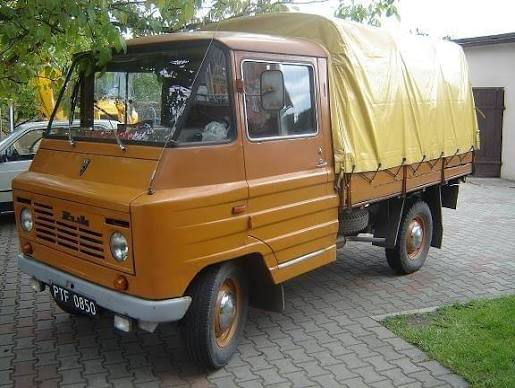
Opis: Legendarny polski samochód dostawczy produkowany w Lublinie. Kanciasta, użytkowa sylwetka i niezawodny charakter. Żuk przewiózł miliony ton towarów.
| Parametr | Wartość |
|---|---|
| Lata produkcji | 1958 – 1998 |
| Miejsce produkcji | Fabryka Samochodów Ciężarowych (FSC), Lublin |
| Wersje silnikowe | M-20, S-21 (benzynowe 2.1 l), oraz diesel Andoria 4C90 |
| Cena kiedyś | Przeznaczony głównie dla państwowych przedsiębiorstw i PGR-ów (na przydział) |
| Cena teraz | ok. 6 000 – 20 000 zł |
| Ładowność | Około 900 - 950 kg |
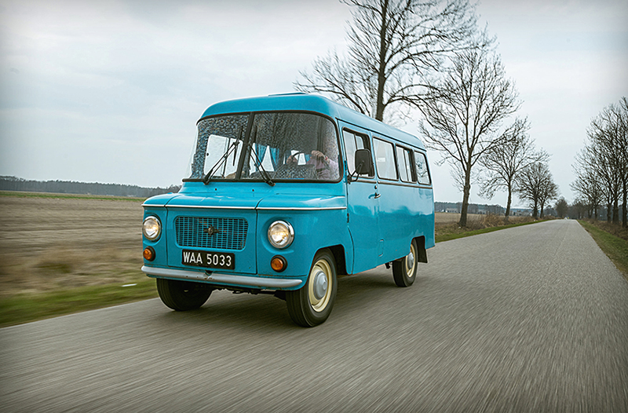
Opis: Niezastąpiony brat cioteczny Żuka z Zakładów Samochodowych w Nysie. Przez charakterystyczny "smutny" wyraz reflektorów zyskała przydomek "Smutek".
| Parametr | Wartość |
|---|---|
| Lata produkcji | 1958 – 1994 |
| Miejsce produkcji | Zakład Samochodów Dostawczych (FSD), Nysa |
| Wersje silnikowe | S-21 (górnozaworowy 2.1 l, moc 70 KM) |
| Cena kiedyś | Towar deficytowy dla handlu, milicji, pogotowia ratunkowego i straży pożarnej |
| Cena teraz | ok. 8 000 – 25 000 zł |
| Przeznaczenie | Towarowy, mikrobus, sanitarka, Nysa "towos" |
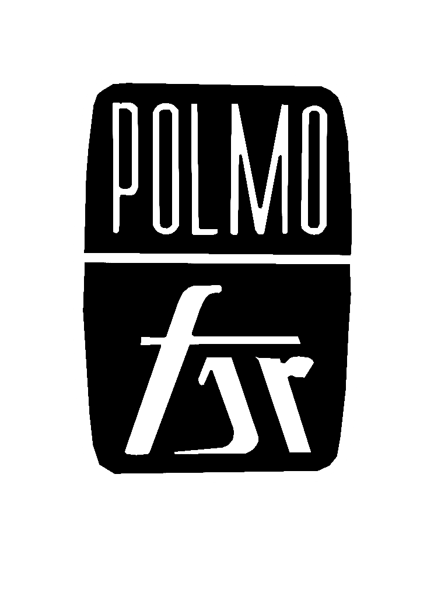
FSR Tarpan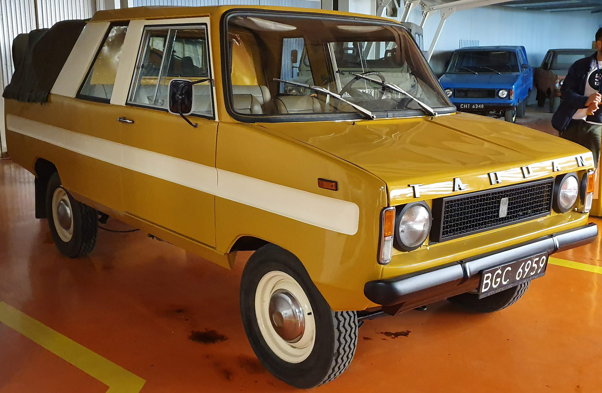
Opis: Narodzony w Wielkopolsce hybrydowy wół roboczy polskiego rolnictwa – w połowie samochód osobowy, a w połowie solidna ciężarówka.
| Parametr | Wartość |
|---|---|
| Lata produkcji | 1973 – 1991 |
| Miejsce produkcji | Fabryka Samochodów Rolniczych (FSR), Poznań-Antoninek |
| Wersje silnikowe | S-21 (benzyna), silniki Perkins (diesel), Fiat 2.4D |
| Cena kiedyś | Rozprowadzany w ramach zaopatrzenia rolnictwa i kół gospodyń |
| Cena teraz | ok. 7 000 – 22 000 zł |
| Cechy szczególne | Słynna przesuwna ściana grodziowa (zmiana kabiny na skrzynię ładunkową) |